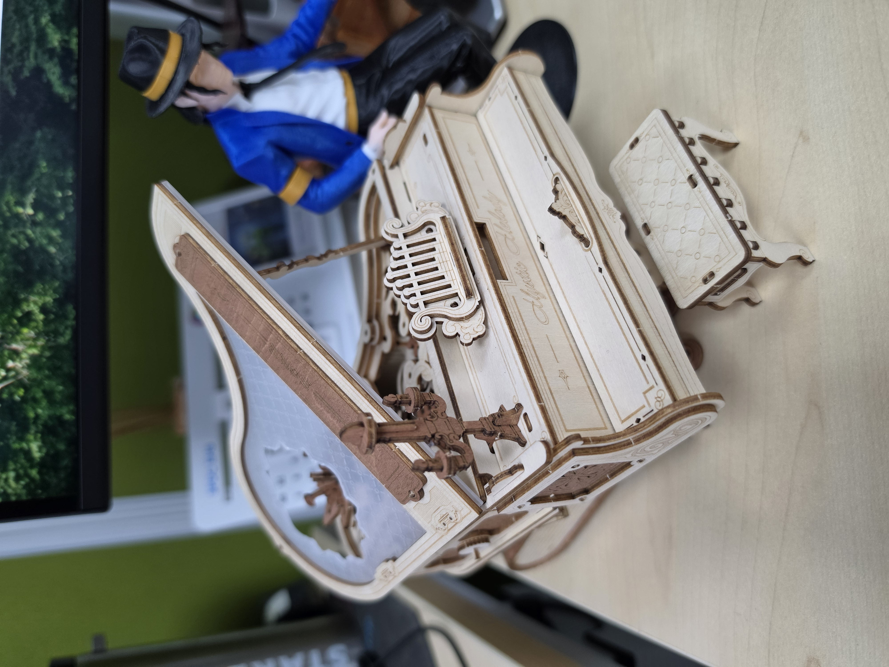
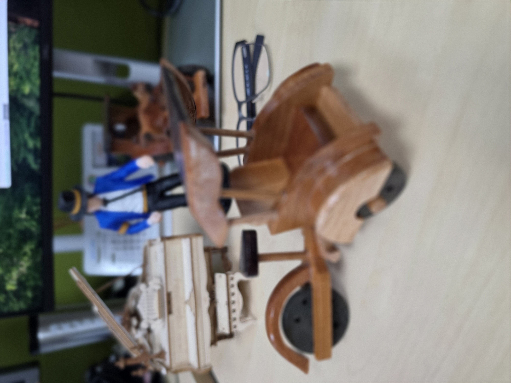
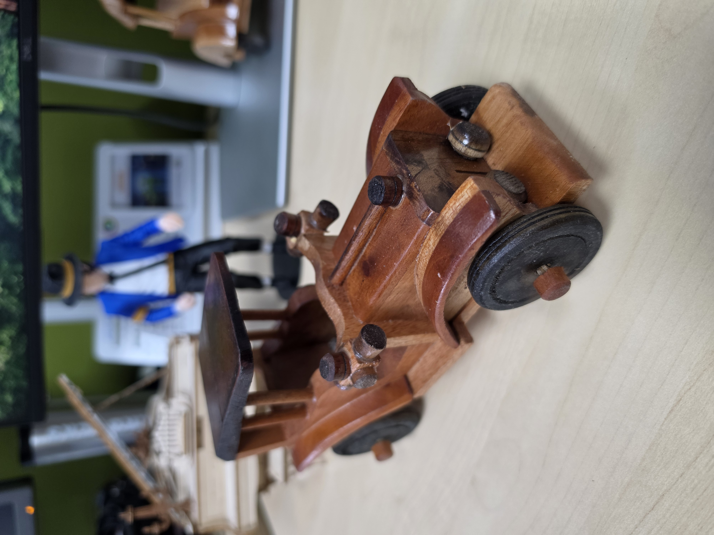
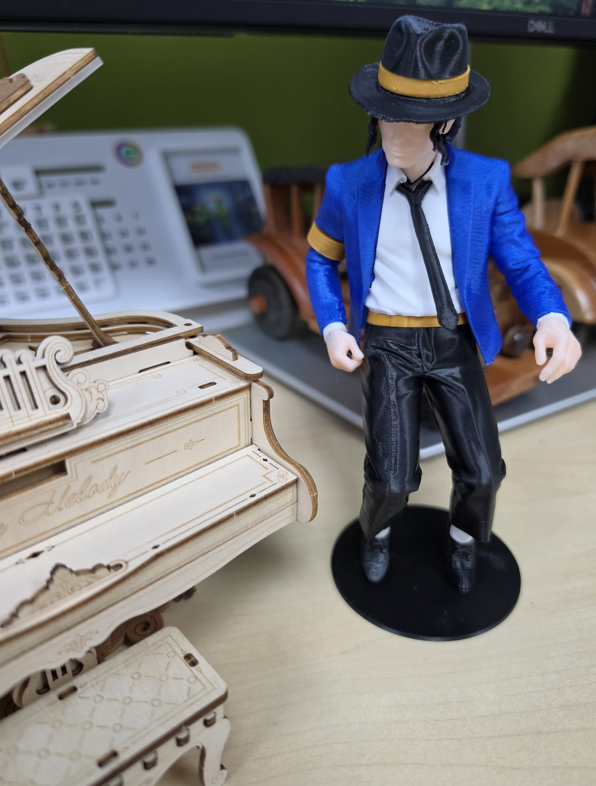

The turn of the key behind the miniature wooden piano made a small click. When the lever was released, a clear and soothing melody began to flow, filling the corners of the old silent room. Its gentle chime slowly swept away all the burdens in the mind, carrying the soul across the dimensions of time.
Under the dim light, the row of miniature wooden toys on the table seemed to awaken from a long slumber.
Afternoon Breeze & a Small Pedicab

My eyes fell on the miniature traditional pedicab. Instantly, my nose seemed to smell the damp earth after rain in childhood. Memories of simple afternoons spun back: sitting on the front bench of the pedicab with Mother, gently swaying to the tired yet smiling pedaler's strokes. That was a time when happiness was so simple—just the afternoon breeze hitting a carefree child's face.
The Pace of Time & Flying Dreams

Next to the pedicab, a row of ancient Dutch-style toy cars stood. Their rigid yet elegant shapes reminded me of Grandpa's stories about the past—about an era that moved slowly, full of history left on old asphalt roads.
But time never stops. From the old cars, my gaze shifted to a miniature airplane. It was a symbol of teenage years, when dreams began to soar high. A time when we no longer just walked on the ground, but looked up to the sky, wanting to fly freely chasing dreams high in the heavens.
Michael Jackson · The King of Pop

Amid the noise of past memories and the peace brought by the piano melody, my eyes fixed on an iconic figure. Michael Jackson, the King of Pop.
His presence on the corner of the table injected a magical energy into the silence. For the generation that grew up with him, he was not just a musician; he was the soundtrack of courage, freedom, and self-expression. Inside my head, the soothing piano notes seemed to magically merge with the legendary moonwalk on a grand stage, surrounded by thousands of lights and shouts of admiration. He was a reminder that behind the silence of life, there is always room to dance and shine.
The piano notes slowly began to fade, leaving one by one the last notes hanging in the air before finally falling silent.
The wooden toys remained still in their place. But inside my chest, a warm feeling swelled. A brief yet profound sentimental journey, proving that even though our bodies have walked far into the future, our little hearts will always find a way home through the threads of memory.
“ … and the piano chime still echoes,
bringing home every step we ever left behind. ”